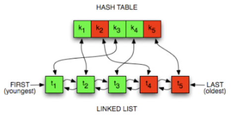

Overview
Cache replacement algorithms decide which data to evict when the cache of the mobile device is full. Common algorithms include LRU, Buddy Memory Allocation Algorithm, Greedy Dual size Frequency Cache replacement algorithm each using different strategies based on usage history. The main goal here is to maximize hit rate and optimize performance with limited memory.
LRU Cache Algorithm:

LRU cache can be implimented by the doubly linked list for storing the least recently used data and combined with the Linked Hash map which helps in the fast access of the list nodes by the storing the address of the nodes in the key value pairs of the map.
| Advantage | Description |
|---|---|
| Improves Hit Rate | By evicting the least recently used item, LRU keeps frequently accessed data in the cache. |
| Easy to Implement | Can be efficiently implemented using data structures like HashMap + Doubly Linked List. |
| Realistic Access Pattern | Mimics real-world usage where recently used data is more likely to be used again soon. |
Time Complexity: O(1) for both get() and put() operations using HashMap + Doubly
Linked List.
Space Complexity: O(capacity), where capacity is the maximum number of items the cache
can hold.
Buddy System Memory Allocation Algorithm:
Buddy System is a memory allocation technique used in computer OS to allocate and manage memory efficiently. This technique by dividing the memory into fixed-size blocks, and whenever a process requests memory, the system finds the smallest available block that can accommodate the requested memory size. It splits memory blocks, called “buddies,” to minimize fragmentation and ensure efficient allocation. When a process is deallocated, its buddy can be merged back into a larger block, reducing wasted space.
- Splitting: If a block is too large, it's divided into two equal "buddy" blocks.
- Merging: When both buddies are free, they are merged back into a larger block to reduce fragmentation.
Despite these benefits, it suffers from internal fragmentation, as memory allocations like 66 KB may require a full 128 KB block, wasting space. This issue is often addressed with slab allocation, layered on top of the buddy system for finer control.
More DetailsGreedy Dual Size Frequency Cache Replacement Algorithm
The Greedy-Dual-Size-Frequency (GDSF) algorithm is an advanced cache replacement policy designed to improve caching efficiency by considering multiple factors like the cost of fetching, object size, and access frequency. It is some what like the algorithm that uses the past heuristics data for the future predictions and the decision making of the algorithm.
Key Concepts of GDSF
Advantages
Feature
Benefit
Cost-awareness
Optimizes for expensive-to-fetch objects
Size-awareness
Prevents large objects from dominating cache
Frequency-awareness
Boosts frequently accessed objects
Applications
References:
- https://medium.com/swlh/exploring-the-bin-packing-problem-f54a93ebdbe5
- https://medium.com/@tech_future/bin-packing-nfd-algorithm-custom-more-reliable-algorithm-alternative-cebbe7c27ede
- https://ieeexplore.ieee.org/document/8258989